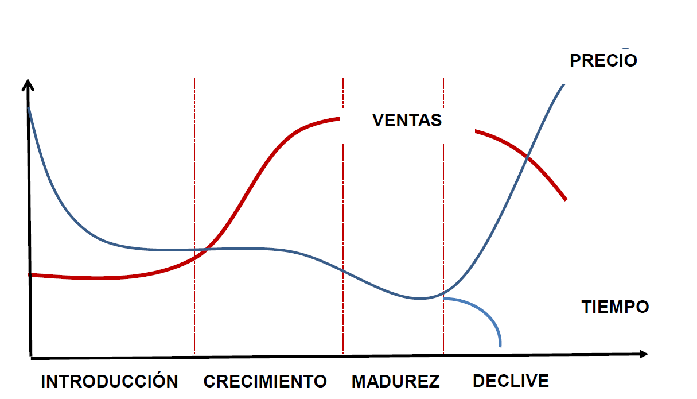
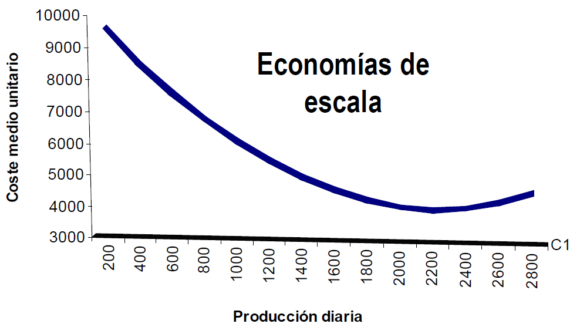
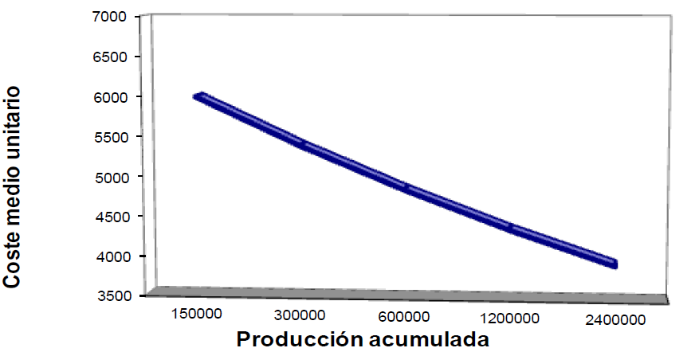

2.2. Factores condicionantes, objetivos y estrategias en materia de precios🔗
- Factores externos son aquellos que no son controlables por parte de la empresa
- Factores internos son aquellos que son controlables por parte de la empresa
Factores externos🔗
Marco legal y otros factores del macroentorno🔗
En general existe libertad de precios, pero no del todo. Mediante normas, las autoridades tratan de evitar:
- Prácticas abusivas a las que conduce el monopolio
- Prácticas lesivas para los intereses de consumidores o competidores
- Acuerdos entre empresas para limitar la competencia
- Competencia desleal
Otros aspectos del entorno relevantes son:
- La situación económica (recesión vs expansión, tipos de interés...) No es lo mismo fijar un precio en una época de recesión que en expansión
- Interés social del producto
Estructura competitiva🔗
- La capacidad para fijar el precio depende significativamente de la situación competitiva (monopolio, oligopolio diferenciado e indiferenciado, competencia perfecta y monopolística...)
- El responsable de la política de precios debe ser capaz de anticipar la capacidad de respuesta de la competencia
- La eficiencia de un cambio de precio depende de la reacción de los competidores
| Grado de diferenciación | Uno | Pocos | Muchos |
|---|---|---|---|
| Monopolio | Oligopolio diferenciado | Competencia monopolística | |
| Monopolio | Oligopolio indiferenciado | Competencia perfecta |
Ciclo de vida del producto🔗

La política de precios se adapta a las etapas del CVP
- Fase de introducción: demanda muy inelástica sin competencia → precios altos
- Etapa de crecimiento y madurez: aumenta la competencia y la demanda es más elástica → reducción de precios
- Etapa de declive: depende de cómo sea la demanda restante → si es inelástica aumenta el precio, si es elástica se reduce el precio
Demanda🔗
-
La sensibilidad de la demanda al precio se mide a partir de la elasticidad → \(E_{d,p}=\dfrac{variación\; de\; la\; demanda}{variación\; del\; precio}\)
- Demanda elástica: \(|E_{d,p}|>1\)
- Demanda inelástica: \(|E_{d,p}|<1\)
-
Dificultades para conocer el valor de la elasticidad:
- Cambia con el paso del tiempo
- Cambia con el cambio de etapa del CVP
- Cambia de unos consumidores a otros
Comportamiento de las partes interesadas🔗
La empresa debe enfrentarse a las reacciones de:
- Competidores
- Intermediarios (pueden anular los efectos del cambio o imponer un determinado precio)
- Trabajadores / directivos
- Proveedores (pueden exigir un cambio paralelo de los precios, depende de su poder de negociación)
- Acreedores (pueden cambiarnos el tipo de interés)
- Sociedad en general
Factores internos🔗
Objetivos de la empresa🔗
La empresa puede perseguir múltiples objetivos:
- Maximizar el beneficio
- Obtener un determinado rendimiento de la inversión
- Incrementar la cuota de mercado
- Impedir la entrada de competidores
- Mantener la situación
- Dotar de una determinada imagen al producto
Objetivo
Cuanto más claro sea un objetivo, más fácil será alcanzarlo.
Ejemplos
Si se desea incrementar la cuota el precio deberá ser menor que si se quiere maximizar el beneficio
La supervivencia supone escoger precios bajos
Decremación: captar las mejores cuotas de mercado, los sectores con más poder de adquisición. Es la estrategia que usan las nuevas empresas; después van a por sectores con menor poder de adquisición.
Costes🔗
Los costes marcarán el precio mínimo (legalmente está prohibido vender por debajo del precio de coste; a esta práctica se la denomina "dumping")
Como siempre: Costes totales = Costes Fijos + Costes variables
A medida que la empresa adquiere experiencia fabricando u obtiene descuentos por cantidad comprada, los costes unitarios de producción tienden a reducirse (efecto experiencia y efecto escala)
Economías de escala🔗

Efecto experiencia🔗
Cuanto más producto fabrico, menos me cuesta producirlo.

Variables de marketing-mix y posicionamiento🔗
Las decisiones de precios deben estar coordinadas con el posicionamiento del producto, la distribución y las decisiones de comunicación para crear un marketing coherente para el producto. No puedo vender un Rolex en el rastro
El precio de un producto Debe fijarse teniendo en cuenta el resto de productos de la línea.
Ejemplos:
- El incremento de la calidad puede modificar la elasticidad de la demanda al precio
- La publicidad puede ayudar a consolidar sin reducción de las ventas una subida del precio
- La promoción de ventas exige un precio que la soporte
- La ausencia de marca se acompañará de un precio más bajo